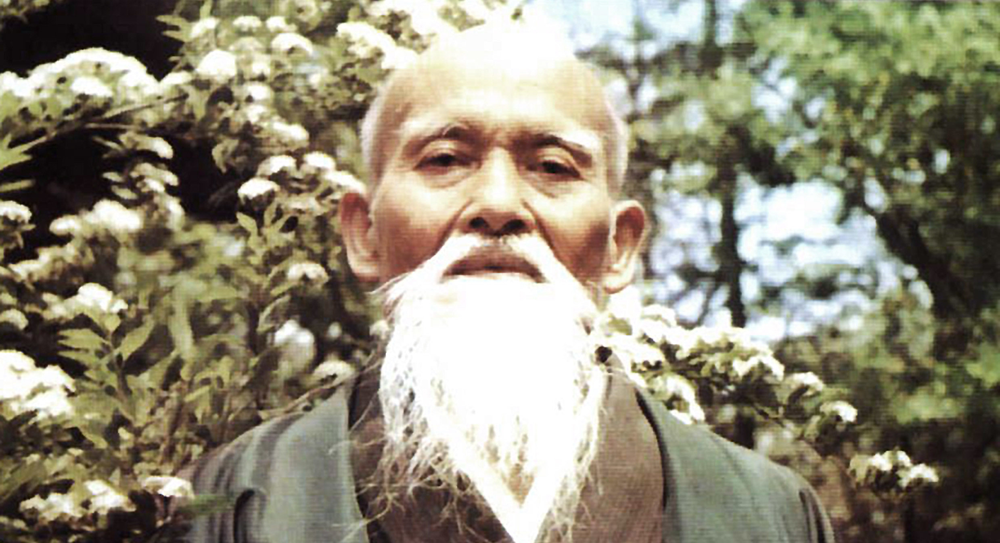

About Our Aikido

O Sensei, the Founder of Aikido
This story has been told many times, so this is just a short version. Aikido is a modern Japanese martial art that was developed from the classical arts practised by the samurai up until the Meiji Restoration. The art as we know it was founded by Morihei Ueshiba (1883 – 1969) who is known to Aikidoka as the Founder or O Sensei, which means “Great Teacher”. O Sensei had learnt several different martial arts such as Yagyu-Ryu, Tenjin Shin’yo-Ryu Jujutsu, and Judo. A principal influence on his martial art was Sokaku Takeda, who taught him Daito-Ryu Aiki Jujutsu starting in 1915.
O Sensei was also a believer in the Omoto religion and profoundly influenced by Onisaburo Deguchi. It is clear that O Sensei considered Aikido to be a spiritual path of self improvement and not a question of violence or dominance over others.
You can read more about O Sensei on Wikipedia.
Morihiro Saito Sensei and Traditional Aikido
In 1942, O Sensei retired to the village of Iwama in Ibaraki prefecture, where he established the Aiki Shuren Dojo and the Aiki Jinja shrine. After the war, the American occupation of Japan included a ban on the practice of martial arts but it seems that O Sensei was able to teach a small number of students quietly in Iwama without interference. One of these students was Morihiro Saito who began practising in 1946.
Saito Sensei is considered to be one of the closest students of the Founder and trained with him until Ueshiba’s death in 1969. O Sensei entrusted the Iwama dojo and shrine to the care of Saito Sensei and he continued in this position until his death in 2002. Furthermore, Saito Sensei considered it his mission to preserve O Sensei’s Aikido by teaching it as he had learned it in the ’40s and ’50s. Saito Sensei’s teachings are known as Traditional Aikido or Iwama Ryu Aikido. Notable aspects of Traditional Aikido include an emphasis on precision and the relationship between Tai Jutsu (body arts or techniques without weapons) and Buki Waza (weapons techniques, including the Japanese sword and the Jo short staff).
Daniel Toutain Sensei and Sonya Tomioka Toutain Sensei
Daniel Toutain Sensei began training in Aikido in 1968 in France, under Masamichi Noro Sensei, with whom he studied for ten years. He also spent ten years as a senior student of Nobuyoshi Tamura Sensei. In 1992, Toutain Sensei met and began training with Morihiro Saito Sensei and trained with him until his death in 2002. During this time, Toutain Sensei visited Iwama as uchi deshi many times and also brought Saito Sensei to Europe for seminars. Toutain Sensei was awarded the rank of 6th dan by Saito Sensei in 2002.
Daniel Toutain has initiated Wanomichi after fifty years of Aikido practice. He wanted to bring a new approach to the training received at Iwama, with the goal of improving the understanding and application of the fundamental principles of the art. Wanomichi perpetuates the techniques of Traditional Aikido, which came from O Sensei, and adds other practices that share common points, in order to deepen the students’ comprehension.
Wanomichi consists of the full syllabus of Tai Jutsu and Buki Waza with Kaizen Dosa. Kaizen Dosa, which means “continuous improvement”, consists of Ashtanga Yoga, meditation, and other preparatory exercises. The yoga and meditation is taught by Sonya Tomioka Toutain, to help the student understand and strengthen the body and mind.
Wanomichi is a detailed and precise form of Traditional Aikido, and has many students in Europe, Africa, and elsewhere. In our dojo, this is the form of Aikido we pursue.